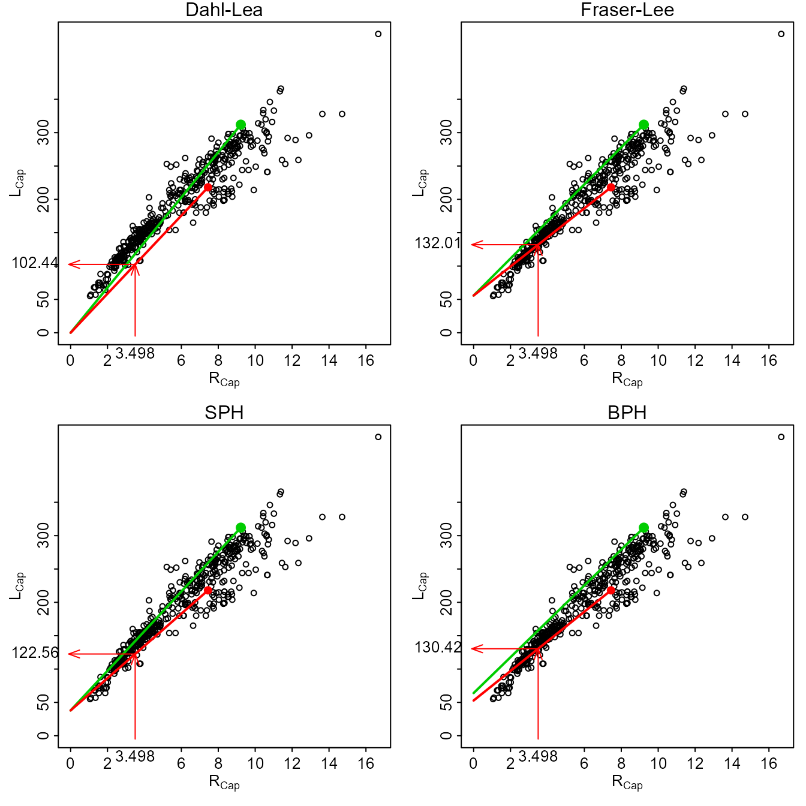

vignettes/BCIntro.Rmd
BCIntro.RmdFrancis (1990) defined back-calculation as “… a technique that uses a set of measurements made on a fish at one time to infer its length at an earlier time or times. Specifically, the dimensions of one or more marks in some hard part of the fish, together with its current body length, are used to estimate its length at the time of formation of each of the marks. … The marks are generally annual rings associated with growth checks, … .” Thus, backcalculation is the reconstruction of the length of a fish at previous ages from measurements made on calcified structures.
More thorough introductions to back-calculation are in Vigliola and Meekan (2009) and Section 11.2.3.1 in Shoup and Michaeletz (2017).
Calcified structures are scales, spines, fin rays, otoliths, or other bones from fish that can be processed in such a way as to show marks that represent annuli, or yearly benchmarks. Hereafter, “structure” will refer to “calcified structure.”
Two types of measurements can be made on structures. A radial measurement is the distance from the center of the structure (e.g., focus of scale or nucleus of otolith) to the edge of an annulus. An incremental measurement is the distance between two successive annuli. Radial measurements are required for back-calculation of fish length. Incremental measurements are used in some forms of modeling growth [e.g., Weisberg (1993) and Weisberg et al. (2010)].
Back-calculation models estimate length at previous age \(i\) (i.e., \(L_{i}\)) from known values of length at time of capture (\(L_{Cap}\)), scale radius to the \(i\)th annulus (\(R_{i}\)), and scale radius at time of capture (\(R_{Cap}\)). Several back-calculation models rely on the relationship between \(R_{Cap}\) and \(L_{Cap}\). Depending on the model, a function of mean \(R_{Cap}\) for a given \(L_{Cap}\) (i.e., \(E(R_{Cap}|L_{Cap})\) ) or mean \(L_{Cap}\) for a given \(R_{Cap}\) (i.e., \(E(L_{Cap}|R_{Cap})\)) is used. These functions are not required to be linear, but often are, and in their linear form are represented as
\[ E(L_{Cap}|R_{Cap})=a+bR_{Cap} \quad \quad \text{(1)} \]
\[ E(R_{Cap}|L_{Cap})=A+BL_{Cap} \quad \quad \text{(2)} \]
The first back-calculation model was jointly developed by Knut Dahl and Einar Lea and appeared in Lea (1910). The underlying concept of the Dahl-Lea model is that growth of the calcified structure is in exact proportion to growth in length of the fish. With this, the ratio of \(R_{i}\) to \(R_{Cap}\) is the same as the ratio of \(L_{i}\) to \(L_{Cap}\). Rearrangement of this equality yields the Dahl-Lea back-calculation model
\[ L_{i}=\frac{R_{i}}{R_{Cap}}L_{Cap} \quad \quad \text{(3)} \]
The Dahl-Lea model describes a family of straight lines that pass through the origin and each observed (\(R_{Cap},L_{Cap}\)) point. Visually (Figure 1), the estimated \(L_{i}\) for a particular fish is found by locating \(R_{i}\) along the x-axis, moving vertically until the straight line for that fish is met, and then moving horizontally to the point on the y-axis.

Figure 1: Plot of length-at-capture versus scale radius for West Bearskin Lake Smallmouth Bass in 1990. All four methods of backcalculation are shown for fish 704 (\(R_{2}\)=3.498, \(L_{Cap}\)=218, and \(R_{Cap}\)=7.44389; red point and line) with calculational steps shown with the arrows. Fish 701 is shown as the green point and line for comparative purposes.
Fraser (1916) was the first to describe, but Lee (1920) was the first to formally derive, the back-calculation model from the concept that “the growth increment of the scale is, on the average …, a constant proportion of the growth increment of the fish” (Francis 1990). In practice, the Fraser-Lee model modified the Dahl-Lea model by adjusting for the length of the fish when the structure forms (i.e., \(L=c\) when \(R=0\)), that is,
\[ L_{i}=\frac{R_{i}}{R_{Cap}}(L_{Cap}-a)+a \quad \quad \text{(4)} \]
where \(a\) comes from the length of the fish at the time of structure formation, the intercept of the length-structure relationship regression (e.g., from Equation 1), or, when using scales, from published “standards” for a species (Carlander 1982). The Fraser-Lee model describes a family of lines with an intercept of \(a\) that pass through the (\(R_{Cap},L_{Cap}\)) point (Francis 1990; Figure 1).
The scale proportional hypothesis (SPH) model was named by Francis (1990), but was first recognized by Whitney and Carlander (1956) when they said “{i}f the scale was 10 per cent larger when the fish was caught than the average scale for that size of fish, [then] the scale would be 10 per cent larger than normal throughout the life.” If “average” and “normal” are considered to be expected values, then this hypothesis can be written as
\[ \frac{R_{i}}{E[R|L_{i}]}=\frac{R_{Cap}}{E[R|L_{Cap}]} \]
If it is assumed that the scale-length relationship is linear, then the two expected values in these ratios are computed by plugging \(L_{i}\) and \(L_{Cap}\), respectively, into the scale-length relationship (i.e., Equation 2) to produce
\[ \frac{R_{i}}{A+BL_{i}}=\frac{R_{Cap}}{A+BL_{Cap}} \]
which can be solved for \(L_{i}\) to yield the general SPH back-calculation model
\[ L_{i} = \frac{R_{i}}{R_{Cap}}\left(L_{Cap}+\frac{A}{B}\right) - \frac{A}{B} \quad \quad \text{(5)} \]
The linear SPH model produces a family of lines that all have an intercept of \(-\frac{A}{B}\) and pass through each observed (\(R_{Cap},L_{Cap}\)) point (Figure 1). The SPH model is the same as the Fraser-Lee model except that the intercept from Equation 1 is replaced with \(-\frac{A}{B}\). The SPH model is the same as the Dahl-Lea model if \(A=0\).
The body proportional hypothesis (BPH) model was also named by Francis (1990) and was also first recognized by Whitney and Carlander (1956) when they said “{i}f a fish at time of capture were 10 per cent smaller than the average fish with that size of scale, [then] the fish would be 10 per cent smaller than the expected length for the size of that scale throughout life.” This hypothesis can be written as
\[ \frac{L_{i}}{E[L|R_{i}]}=\frac{L_{Cap}}{E[L|R_{Cap}]} \]
If the length-scale relationship is linear then the expected values can be found by plugging \(R_{i}\) and \(R_{Cap}\) into Equation 1 to get
\[ \frac{L_{i}}{a+bR_{i}}=\frac{L_{Cap}}{a+bR_{Cap}} \]
which can be solved for \(L_{i}\) to yield the general BPH back-calculation model
\[ L_{i}=L_{Cap}\frac{a+bR_{i}}{a+bR_{Cap}} \quad \quad \text{(6)} \]
The linear BPH model produces a family of lines that have an intercept of \(\frac{aL_{Cap}}{a+bR_{Cap}}\) and pass through each observed (\(R_{Cap},L_{Cap}\)) point (Figure 1). In contrast to the other back-calculation models, the BPH model uses lines with a different intercept for each fish. The linear BPH model is the same as the Dahl-Lea model if \(a=0\).
Vigliola and Meekan (2009) described 18 other models for the back-calculation of fish length. Many of these models are variations of the BPH and SPH models described above, but assuming an other than (geometrically) linear model (e.g., quadratic or other polynomials, or exponential models that are either linearized or fit with non-linear regression). Still other models model the effect of age or time on the the relationship between \(L_{Cap}\) and \(R_{Cap}\) or \(R_{Cap}\) and \(L_{Cap}\). Some of these other models have been shown to be more useful when using otoliths, modeling daily increments, or for specific fishes. See Vigliola and Meekan (2009) and Section 11.2.3.1 in Shoup and Michaeletz (2017) for more details.
Carlander, K.D. 1982. Standard intercepts for calculating lengths from scale measurements for some centrarchid and percid fishes. Transactions of the American Fisheries Society 111:332–336. Abstract
Francis, R.I.C.C. 1990. Back-calculation of fish length: A critical review. Journal of Fish Biology 36:883–902. Abstract
Fraser, C.M. 1916. Growth of the spring salmon. Transactions of the Pacific Fisheries Society. 1915:29–39.
Lea, E. 1910. On the methods used in the Herring-investigations. Publ. Circonst. Cons. perm. int. Explor. Mer. 108:14–22.
Lee, R.M. 1920. A review of the methods of age and growth determination in fishes by means of scales. Fisheries Investigations, London Series 2 4(2):1–32.
Shoup, D.E., and P.H. Michaletz. 2017. Growth estimation: Summarization. Pages 233-264 in Quist, M.C. and D.A. Isermann, editors. Age and growth of fishes: principles and techniques. American Fisheries Society, Bethesda, MD.
Vigliola, L., and M.G. Meekan. 2009. The back-calculation of fish growth from otoliths. Pages 174-211 in Green, B., B. Mapstone, G. Carlos, and G. Begg, editors. Tropical fish otoliths: information for assessment, management and ecology, volume 11. Springer, Dordrecht, Netherlands. Full Text
Weisberg, S. 1993. Using hard-part increment data to estimate age and environmental effects. Canadian Journal of Fisheries and Aquatic Sciences 50:1229–1237. Abstract
Weisberg, S., G. Spangler, and L.S. Richmond. 2010. Mixed effects models for fish growth. Canadian Journal of Fisheries and Aquatic Sciences 67:269-277. Abstract
Whitney, R.R., and K.D. Carlander. 1956. Interpretation of body-scale regression for computing body length of fish. Journal of Wildlife Management 20:21–27. Abstract